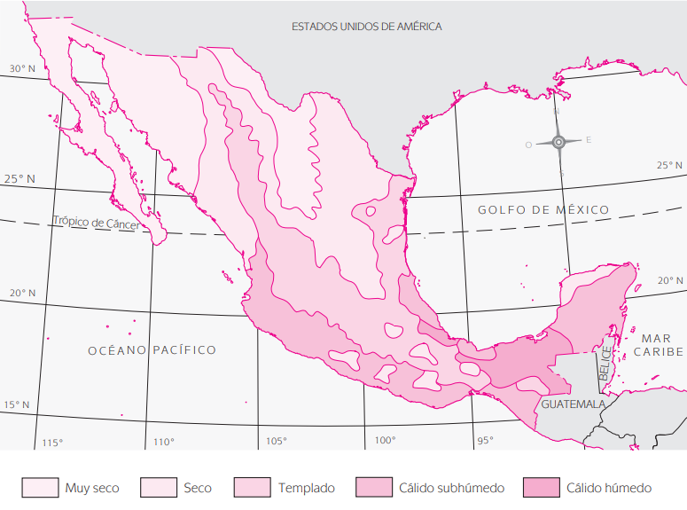

Conceptos básicos de los recursos naturales, problemas ambientales y de la población
Selecciona el tema de tu interés
México
Geografía física
El nombre oficial del país es Estados Unidos Mexicanos, se localiza en el continente americano y su posición geográfica, de acuerdo con el Instituto Nacional de Estadística y Geografía (INEGI) , es:
- Latitud extrema norte: 32° 43΄, donde se encuentra el monumento 206, que marca el límite del país con Estados Unidos de América.
- Latitud extrema sur: 14° 32΄, localizada en la desembocadura del río Suchiate, en el estado de Chiapas.
- Longitud extrema este: 86° 42΄, que está en Isla Mujeres, Quintana Roo.
- Longitud extrema oeste: 118° 27΄, ubicada en la isla de Guadalupe, Baja California, en el Océano Pacífico.
Superficie territorial
México es uno de los países más grandes del continente americano, a pesar de haber perdido una considerable extensión de territorio, que hoy forma parte de Estados Unidos.
Las mediciones más recientes, que corrigen algunos errores anteriores, indican que la superficie territorial de México es 1 964 375 km 2
Fronteras
Los límites o fronteras del territorio continental mexicano son los siguientes:
- Al norte o límite septentrional: Estados Unidos de América.
- Al este: el Golfo de México y el Mar Caribe.
- Al sureste: Guatemala y Belice.
- Al occidente y al sur: Baja California y el Océano Pacífico (límites continentales;no se incluyen los límites insulares).

Orografía
La orografía mexicana está constituida por todo un sistema de cadenas montañosas que abarcan un porcentaje importante del territorio nacional.El estudio del sistema orográfico , que es el conjunto de las cadenasmon tañosas de un país, es fundamental por la gran cantidad de recursosforestales y minerales que alberga, así como por los problemas de comunicación que ocasiona entre las distintas regiones del país, algunas de las cuales están muy aisladas e incomunicadas.En general, el territorio nacional es muy accidentado; además de las enormes cadenas montañosas hay en él grandes mesetas, llanuras extensas, altiplanicies y depresiones.
Las principales características del relieve del suelo mexicano son las siguientes:
Sistema montañoso
- Sierra Madre occidental
- Sierra Madre del sur
- Sistema Volcánico Transversal o Eje Neovolcánico
- Sierra Madre oriental
- Sierra de Baja California
- Sierra de Chiapas
Planicies
- Llanuras del norte
- Mesa del centro
- Plataforma yucateca
- Desierto sonorense
- Llanura costera del Golfo norte
- Llanura costera del Golfo sur
- Llanura costera del Pacífico
- Llanura de Baja California
- Depresión del Balsas-Tepalcatepec

Hidrografía
La hidrografía mexicana está conformada por ríos, lagos y lagunas, que son aguas superficiales . Su importancia reside básicamente en la influencia que ejercen en la vida de los habitantes, y en sus aspectos físicos.Los ríos se agrupan de acuerdo con el lugar donde desembocan. Así,hay ríos de la vertiente del Golfo, de la vertiente del Pacífico e interiores.
Los más importantes son los siguientes:
Vertiente del Pacífico
- Río Colorado (Baja California y Sonora)
- Río Sonora (Sonora)
- Río Yaqui (Chihuahua y Sonora)
- Río Mayo (Chihuahua)
- Río Fuerte (Chihuahua y Sinaloa)
- Río Sinaloa (Sinaloa)
- Río Culiacán (Sinaloa)
- Río San Pedro o Mezquital (Nayarit)
- Sistema Lerma-Chapala-Santiago (Estado de México, Michoacán y Jalisco)
- Río Balsas (Guerrero y Michoacán)
- Río Papagayo (Guerrero)
- Río Verde (Zacatecas y Jalisco)
- Río Tehuantepec (Oaxaca)
- Río Suchiate (Chiapas)
Vertiente del Golfo
- Río Bravo (Chihuahua, Coahuila, Nuevo León y Tamaulipas)
- Río Conchos (Chihuahua)
- Río Salado (Tamaulipas y Coahuila)
- Río San Juan (Nuevo León y Tamaulipas)
- Río Soto la Marina (Tamaulipas)
- Río Tamesí (Tamaulipas)
- Río Pánuco (Veracruz)
- Río Tuxpan (Tamaulipas y Veracruz)
- Río Tecolutla (Puebla y Veracruz)
- Río Blanco (Veracruz)
- Río Papaloapan (Veracruz)
- Río Coatzacoalcos (Veracruz)
- Río Grijalva (Tabasco)
- Río Usumacinta (Chiapas)
Vertiente interior
- Río Nazas (Durango)
- Río Aguanaval (Zacatecas, Durango y Coahuila)

Climas
El clima es el conjunto de fenómenos meteorológicos que caracterizan el
estado atmosférico y su evolución en un lugar determinado.4
De acuerdo con esta definición, el clima influye sobre las actividades
humanas y éstas a su vez repercuten en él. La interacción hombre-clima
se observa en el rendimiento productivo de climas diferentes y en actividades como la agricultura y la ganadería, así como en la formación de
pastizales y recursos forestales , que requieren determinada temperatura y cierto volumen de lluvias. Otras actividades, como la industria y los servicios, también necesitan
una situación climática favorable
Los factores más importantes que determinan los climas en México son:
- La situación geográfica del país entre dos océanos, ello permite que ingresen poderosas corrientes de aire provenientes del mar.
- El sistema montañoso , que impide la entrada de algunas corrientes de aire.
- La forma del país, que demarca el territorio en la región continental norte, por donde penetran vientos secos y fríos, y la región sur, más cercana al ecuador y, por lo tanto, más caliente.
- Situación del país entre ciertos centros de acción de la atmósfera, que origina altas presiones en algunos lugares.
De acuerdo con el INEGI, éstos son los principales climas de México :
- Cálido húmedo
- Abarca una superficie de 92 458 km2 y representa 4.7% del territorio nacional. Se localiza en parte de Veracruz, Tabasco, Campeche y algunas zonas de estados colindantes. El clima cálido húmedo tiene lluvias todo el año y su régimen térmico es caluroso, con temperaturas promedio superiores a 18°C y lluvias por encima de los 750 mm3. Algunos autores lo consideran como tropical lluvioso con precipitaciones todo el año.
- Cálido subhúmedo
- Representa 23% del territorio nacional, con una superficie de 452 452 km2 que comprende los estados de Jalisco, Colima, Michoacán, Oaxaca, Chiapas, las llanuras costeras de Veracruz y la mayor parte de la península de Yucatán. El clima cálido subhúmedo tiene un régimen térmico caluroso regular, cuenta con vegetación de bosque tropical y, en algunas partes, de sabana. Sus lluvias son abundantes en el verano y superiores a los 750 mm3; la temperatura promedio es de 18°C. Algunos autores consideran este clima como tropical lluvioso con lluvias en verano.
- Clima templado
- Se extiende en una superficie de 456 387 km2 y representa 23.2% del territorio nacional. Comprende las regiones altas y medias, ubicadas en las partes media y noroeste de Tamaulipas; gran par te de la meseta de Anáhuac; meseta central de Chiapas; suroeste de Puebla; región mixteca (entre Oaxaca, Guerrero y Puebla), y sierra de Chiapas.Este clima alcanza temperaturas superiores a los 18°C en los meses más calientes y muy bajas en invierno, aunque generalmente por arriba de 0°C. Su régimen de lluvias es muy variado y en algunos casos sólo presenta lluvias en invierno; otras partes tienen lluvias todo el año y otras más, lluvias escasas durante el año.Su promedio anual de lluvias es de 600 a 1 000 mm3. Su vegetación principal es de pradera
- Clima seco
- Abarca la mayor proporción del territorio nacional, con 28.3%, que representa 556 713 km2.Comprende parte de la meseta de Anáhuac, Chihuahua, parte de Zacatecas, San Luis Po tosí, Nuevo León, Coahuila, noroeste de Tamaulipas, norte de Durango y oriente de la Sierra Madre occidental.
- Clima muy seco
- Cubre 409 174 km2 del territorio nacional, y representa 20.8% de la superficie del país. Incluye la mayor parte de Baja California, Sonora y parte de Puebla y San Luis Potosí.A este clima también se le llama desértico. Sus lluvias son muy escasas y su temperatura, extremosa: muy caliente en los meses calurosos y muy fría en el invierno. Su vegetación es escasa y de tipo desértico, con algunas hierbas

Suelos
Los suelos constituyen lo que se llama recursos edafológicos y son de vital importancia para la economía , porque en ellos crece la vegetación y se desarrolla la actividad agrícola, ganadera y forestal, que contribuyen a la conservación o destrucción de los propios suelos.En México existe gran cantidad de tipos de suelos , debido a la orografía , el clima , la vegetación, la temperatura, la hidrografía y el aprovechamiento de la tierra.
Los principales tipos de suelos son los siguientes:
- Suelos lateríticos o latéricos
- Son de clima tropical y de regiones húmedas; se localizan en la planicie costera del Golfo de México, en el norte de la Sierra de Oaxaca y en parte de Nayarit
- Suelos terra rosa
- Se encuentran en la mayor parte de la península de Yucatán y en regiones de Tabasco y Campeche; contienen rocas calizas
- Suelos amarillos
- Son propios de climas subhúmedos y templados, y su vegetación predominante es de coníferas; se localizan en Veracruz, asociados con suelos latéricos
- Suelos cafés forestales
- Se observan en las zonas boscosas, principalmente en la Sierra Madre occidental; en parte de Durango y Jalisco; en las sierras Madre del sur y de Oaxaca; en la zona montañosa de Chiapas y en la Sierra Madre oriental.
- Suelos podzoles
- Podzol significa “ceniza”. Contienen materia orgánica y son adecuados para el pastoreo o los bosques. Se localizan en la vertiente interior de la Sierra Madre occidental en la parte media del Eje Volcánico Transversal, en la Sierra y Mesa central de Chiapas, así como en la Mixteca oaxaqueña y las partes altas de Guerrero
- Suelos de pradera
- Cubiertos por pastos y zacates, se hallan en la planicie costera del Océano Pacífico y en regiones de Morelos, Puebla y Chiapas, además de la Huasteca veracruzana
- Suelos negros
- También se les llama grises o chenozem, y son propios de climas templados semisecos; su vegetación principal es de pradera semidesértica. Estos suelos son muy adecuados para la agricultura y se localizan en las vertientes este y oeste de la Sierra Madre occidental, en la parte sur y media del Altiplano central, en la Cordillera Neovolcánica y en la zona mixteca
- Suelos castaños
- También se les denomina suelos chestnut. Son típicos de climas se cos áridos o semiáridos, con vegetación esteparia. Cubren parte de Coahuila,Nuevo León y Tamaulipas, del centro de Chihuahua a Durango, Zacatecas y San Luis Potosí, y pequeñas zonas de Guanajuato, Querétaro, Sonora, Sinaloa, Distrito Federal, Michoacán y Jalisco
- Suelos grises y café-grisáceos
- Son propios de climas áridos y semiáridos, y su vegetación es baja y de matorrales desérticos. Se localizan en la península de Baja California, la planicie costera de Sonora, buena parte de Chihuahua, regiones de Durango, Coahuila, Zacatecas, Nuevo León y San Luis Potosí, casi todo el estado de Aguascalientes y pequeñas zonas de Oaxaca, Puebla y Veracruz.
- Suelos rendzinas
- Rendzina significa “suelo arcilloso plástico”. Se encuentran en zonas de clima tropical, en la planicie costera de Tamaulipas, en una región de San Luis Potosí, Veracruz, Hidalgo y la Península de Yucatán. Son adaptables a los diversos cultivos del clima donde se desarrollan
Programación Lineal
Selecciona el tema de tu interes
Desarrollo Agropecuario
El sector agropecuario de la economía mexicana está integrado por cuatro ramas económicas: agricultura , ganadería , silvicultura y pesca .
La agricultura es labranza o cultivo de la tierra, que tiene por objeto obtener los vegetales que se requieren para satisfacer las necesidades humanas. La agricultura es una actividad o rama económica que se encuentra ubicada en el sector agropecuario o primario de la economía de un país.
La ganadería es una actividad o rama económica del sector agropecuario que consiste en la cría de ganado para su venta o la explotación de sus productos derivados, como la carne, leche y piel. Algunos tipos de ganado son el bovino y porcino, entre otros.
La silvicultura es una actividad o rama del sector agropecuario encargada del aprovechamiento y la conservación racional de los bosques y selvas, que obtiene recursos como la madera, la resina y el chicle.
La pesca es una actividad o rama del sector agropecuario que se ocupa de la extracción de especies animales del agua, ya sea del mar, los lagos o ríos.
Regresar
Desarrollo Industrial
La industria es el conjunto de actividades económicas que tiene como finalidad la transformación y adaptación de recursos naturales y materias primas semielaboradas en productos acabados de consumo final o intermedio, que son los bienes materiales o mercancías
Este conjunto de actividades económicas que se realiza en empresas industriales forma el sector secundario de la economía, que en la actualidad se conoce como sector industrial y se divide a su vez en dos subsectores: la industria extractiva y la industria de la transformación.
La industria extractiva es el conjunto de actividades que se efectúan para extraer del subsuelo recursos naturales que se utilizan en la economía, sobre todo minerales y petróleo . Al extraer estos productos también se purifican, es decir, se eliminan los productos que vienen asociados y que no sirven. La industria extractiva se divide en minería e industria petrolera . A su vez, la minería consta de minerales metálicos y minerales no metálicos .
La industria de la transformación es el conjunto de actividades económicas que se realizan para producir bienes materiales o mercancías que han tenido algún cambio durante el proceso productivo. Está conformada por todas las ram as de la economía que se dedican a la transformación de recursos naturales y materias primas .
El sector industrial genera diferentes tipos de bienes, según el objetivo para el que se producen. Estos bienes pueden ser de consumo no duradero, intermedios, de consumo duradero y de capital.
Industria de la transformación. Conjunto de actividades económicas cuyo objeto es producir bienes materiales que han tenido algún cambio durante el proceso productivo.
Los bienes de consumo son los que ya han sufrido una transformación y que satisfacen necesidades finales de los consumidores. También se les llama bienes satisfacientes o bienes de demanda final . Los bienes de consumo pueden ser no duraderos o duraderos; los primeros se consumen inmediatamente o a corto plazo; los segundos duran mucho tiempo, no se consumen en una sola vez y se van desgastando poco a poco.
Los bienes intermedios también se llaman presatisfacientes, insumos o materias primas ; son los que ya han sufrido alguna transformación por medio del trabajo humano y se utilizan en el proceso productivo en el que se elaboran bienes de consumo final . O sea que por sí mismos no satisfacen necesidades finales.
Los bienes de capital son los que sirven para producir otros bienes; también se denominan bienes de producción e incluyen maquinaria, herramienta y equipo. Los bienes de capital constituyen la base del proceso de industrialización de cualquier país.
La producción industrial también se lleva a cabo en la unidad económica de tipo capitalista conocida como empresa; ésta tiene por objetivo combinar los factores de la producción mediante los procesos de trabajo, las relaciones técnicas y las relaciones sociales de producción para obtener los bienes que satisfacen necesidades humanas.
Sector industrial
La industrialización es un proceso económico mediante el cual se fomenta en los países el desarrollo de industrias, es decir, fábricas que produzcan bienes industrializados. La industrialización supone el aumento sostenido de la inversión de las empresas en la compra de maquinaria, equi po, herramienta e innovaciones tecnológicas, así como la contratación de mano de obra asalariada. Todo esto trae como consecuencia el crecimiento de las actividades industriales, lo cual a su vez genera aumento de la producción, productividad, empleo, salarios, ventas y ganancias. La industrialización en México se inició prácticamente a finales del siglo XIX, durante la época porfirista. Algunas de las fábricas que había entonces eran textiles, de productos alimenticios, de cerveza y tabaco. Estas empresas se instalaron en ciudades importantes del país, con el consiguiente proceso de urbanización. Algunas de ellas fueron Distrito Federal, Puebla, Guana juato y Guadalajara. Sin embargo, la industrialización porfirista tuvo una presencia muy pobre; se le fomentó poco, pues la actividad económica principal fue la agricultura de exportación. En este periodo la clase dominante era la oligarquía terrateniente , constituida por grandes latifundistas dueños de las haciendas que producían para exportación. La fuerza de trabajo más importante era la de los jornaleros, que eran los peones acasillados, quienes no podían abandonar fácilmente la hacienda. Se trataba de un modelo de crecimiento hacia afuera . Este modelo hacia afuera basa el desarrollo económico del país en la producción para el mercado externo, en este caso de productos agropecuarios. Después del movimiento armado que comenzó en 1910, vino un periodo de ajuste en el cual se fue formando el nuevo Estado, que surgió precisamente de la lucha armada. La industria aún no alcanzaba a ser una actividad fundamental porque la oligarquía terrateniente conservaba un gran poder económico y político. Sin embargo, las condiciones internas del país, asociadas a la crisis capitalista mundial de 1929, obligaron al Estado a cambiar el rumbo de la nación. México tuvo que seguir un modelo de crecimiento hacia adentro , lo cual significaba producir para satisfacer las necesidades del mercado interno, puesto que las condiciones internacionales por la Gran Depresión orillaron a un drástico descenso de bienes procedentes del mercado exterior.
A este proceso o vía de industrialización se le conoce como modelo de sustitución de importaciones , ya que se producen en el país bienes industriales que antes se importaban y que el mercado externo no surte. De hecho, entre 1921 y 1939 la industrialización sigue los mismos cauces que a fines del siglo XIX, es decir, se observa un desarrollo industrial espontáneo basado en el aumento de la demanda interna y en la integración del mercado nacional; la producción se realiza en empresas pequeñas y artesanales de poco capital y se elaboran sobre todo bienes de consumo no duraderos.
Regresar
Desarrollo de Servicios
¿Que es un servicio?
Los servicios son una serie de actividades muy diversas, cuya característica principal es la realización de un trabajo que no produce bienes tangibles , pero que sí satisface necesidades sociales; es decir, es la prestación personal para que otros individuos obtengan alguna satisfacción.
Sector de Servicios
tengan alguna satisfacción. El sector servicios, que algunos siguen llamando sector terciario , es el conjunto de actividades que, aunque no producen bienes, son necesarias para el funcionamiento del sistema económico
Diferentes tipos de servicios
- Comercio. Es una actividad económica realizada en un conjunto de establecimientos. Consiste en la compraventa de mercancías y servicios, en la que interviene un intermediario (comerciante) entre productor y consumidor.
- Restaurantes y hoteles. Conjunto de establecimientos que prestan servicios de alimentación y hospedaje, actividades económicas muy ligadas al turismo , cada una de las cuales incluye otra serie de servicios; por ejemplo, la hotelería comprende el alojamiento temporal en hoteles, centros vacacionales, albergues y campamentos; los restaurantes incluyen la preparación y venta de alimentos y bebidas, bares, taquerías, puestos de alimentos diversos, jugos en la vía pública, etcétera.
- Transporte. Actividad económica que consiste en el desplazamiento físico, en algún medio de transporte, de personas y mercancías mediante el pago de una tarifa. El transporte puede ser terrestre, ferroviario, aéreo o marítimo; de carga o de pasajeros; también puede clasificarse en local, estatal, regional, nacional e internacional.
- Almacenamiento y comunicaciones. El almacenamiento es un servicio que se presta a las empresas, organizaciones y público en general que tiene necesidad de guardar mercancías, materias primas, granos, etc., en un almacén. Los prestadores de este servicio son los dueños de los almacenes. Las comunicaciones son servicios públicos y privados que consisten en la conexión a distancia entre diferentes lugares, para ello se utilizan diversas técnicas y medios que suponen transmitir palabras habladas o escritas. Los principales servicios de las comunicaciones son: correo, mensajería, paquetería, telecomunicaciones, radiocomunicaciones, servicios telegráficos y telefónicos, telefax, internet y otras formas de comunicación como las microondas y los satélites. Los servicios de almacenamiento y comunicaciones pueden ser prestados por el sector privado o el público y, en algunos casos, se permite la participación extranjera.
- Servicios financieros y seguros . Son los que lleva a cabo el sistema financiero del país. Consisten en la intermediación profesional entre el público ahorrador e inversionista y quienes necesitan estos recursos. Por lo general, los servicios financieros se refieren al manejo del mercado de dinero (oferta y demanda de dinero ) y del mercado de capitales (oferta y demanda de capitales ). Los servicios financieros y de seguros se prestan en el sistema financiero y están integrados por el sistema bancario y por los intermediarios financieros no bancarios.
- Bienes inmuebles . Comprenden el conjunto de servicios de alquiler, compraventa y administración de casas, terrenos, lotes comerciales, bodegas y edificios. Algunas empresas que realizan esta clase de servicios son las inmobiliarias, las fraccionadoras y los corredores de bienes raíces ; también existen agentes de ventas , comisionistas y administradores.
- Servicios profesionales . Son los que ofrecen los profesionales, ya que requieren cierta especialización; destacan las actividades de administración, asuntos legales, contables, promocionales, apoyo y asesorías técnicas, servicios informáticos, agencias de colocación de personal y publicidad. Los servicios que prestan las notarías públicas, bufetes jurídicos y abogados en general que trabajan por su cuenta son muy importantes.
- Servicios de educación . Son los que se brindan en las instituciones públicas y privadas de educación. Las funciones de estas instituciones, así como los servicios que prestan, deben ajustarse a lo señalado en el Artículo 3o. constitucional, e incluyen los niveles preescolar, primaria, secundaria, educación media superior, superior, educación especial, educación tecnológica y normal. Además hay otros servicios educativos que incluyen capacitación y adiestramiento técnico, enseñanza de oficios, academias comerciales de idiomas, artes y educación continua en general.
- Servicios médicos . Comprenden los servicios profesionales que prestan médicos, odontólogos y, en general, servicios de asistencia social. Proporciona servicios médicos tanto el sector público como el privado (consultorios particulares de médicos, odontólogos y laboratorios). Estos servicios incluyen guarderías, hospitales psiquiátricos, asi los, casas-cuna, orfanatos, dispensarios, casas-hogar, centros de rehabilitación, Alcohólicos Anónimos y otras instituciones de asistencia social.
- Servicios de esparcimiento . Son también llamados de diversión e incluyen centros recreativos, culturales y deportivos, así como cine, teatro, centros nocturnos, discotecas, balnearios, museos, bibliotecas, zoológicos, acuarios y jardines botánicos. Los servicios de esparcimiento pueden ofrecerlos tanto el sector privado como el público.
- Otros servicios . A la clasificación se incorporó una rama con este nombre para incluir una gran cantidad de actividades muy heterogéneas que no encajan en ninguna de las otras ramas; entre las que destacan: alquiler de aparatos musicales y de sonido, de maquinaria y equipo, de aparatos eléctricos y mecánicos; servicios de procesamiento de datos; reparación de maquinaria y equipo, de aparatos eléctricos y electrónicos y de automóviles; limpieza y mantenimiento de oficinas e instalaciones en general; instalación y mantenimiento de maquinaria y equipo, etcétera.
- Administración pública y defensa . Son actividades que realiza el sector público , y forman parte de sus funciones sustantivas para cumplir con sus objetivos económicos, políticos, sociales y culturales.
Regresar
Educación
Acción o conjunto de acciones dirigidas al desarrollo de la inteligencia, el carácter y el juicio de las personas de acuerdo con la historia, la cultura y las necesidades de su sociedad
La educación es otro de los elementos importantes del proceso de desarrollo socioeconómico sustentable de cualquier nación, ya que gracias a ella los individuos pueden tener acceso a mejores niveles de vida.
Comprende de tres niveles
- Elemental
- Medio
- Superior
Derecho a la Educación
Artículo 3o. Todo individuo tiene derecho a recibir educación. El Estado —Federación, estados y municipios— impartirá educación preescolar, primaria y secundaria. La educación primaria y la secundaria son obligatorias.
Regresar
Preguntas de Repaso
Unidad III
- Explica en qué consiste cada una de las ramas del sector agropecuario
- Agricultura. Cultivo de la tierra para obtener los vegetales que se requieren para satisfacer las necesidades humanas.
- Ganadería. Cría de ganado para obtener carne, leche, piel y otros productos.
- Silvicultura. Explotación de los bosques para obtener madera, resina y otros productos
- Pesca. Extracción de especies animales de mares y lagos.
- Describe el crecimiento del sector agropecuario de 1940 a la fecha (por sexenio)
El crecimiento del sector agropecuario presenta un incremento gradual durante cada sexenio siendo asi un promedio por cada sexenio:
El promedio de crecimiento anual del sector de los demás sexenios fue el siguiente: Ávila Camacho, 4.5%; Alemán Valdés, 5.8%; López Mateos, 3.4%; Díaz Ordaz, 3.1%; Echeverría Álvarez, 1.6%; López Portillo, 3.3%; Salinas de Gortari, 1.9%; Zedillo Ponce de León, 2.2%; Fox Quesada, 2.2%, y Calderón Hinojosa, 2.7%.
- Describe el crecimiento de la agricultura, ganadería, silvicultura y pesca de 1940 a la fecha (por sexenio).
Agricultura
El promedio anual fue de 5.4% con Ávila Camacho; 9.3% con Alemán Valdés; 3.7% con López Mateos; 2% con Díaz Ordaz; 0.6% con Echeverría Álvarez; 3.5% con López Portillo; 0.5% con Salinas de Gortari; 2.1% con Zedillo Ponce de León; 2.3% con Fox Quesada, y 4.6% con Calderón Hinojosa.
Ganadería
El crecimiento promedio anual por sexenio fue: Ávila Camacho, 3.7%; Alemán Valdés, 4.0%; Ruiz Cortines, 4.0%; López Mateos, 2.8%; Díaz Ordaz, 5.4%; Echeverría Álvarez, 3.0%; López Portillo, 2.7%; De la Madrid Hurtado, 0.5%; Salinas de Gortari, 2.0%; Zedillo Ponce de León, –0.2%; Fox Quesada, 2.4%, y Calderón Hinojosa, 0.9%.
Silvicultura
El crecimiento promedio anual de la producción silvícola por sexenio fue: Ávila Camacho, 5.1%; Alemán Valdés, 1.9%; Ruiz Cortines, 1.5%; López Mateos, 2.9%; Díaz Ordaz, 3.8%; Echeverría Álvarez, 3.1%; López Portillo, 3.4%; De la Madrid Hurtado, 0.7%; Salinas de Gortari, –2.9%; Zedillo Ponce de León, 2.4%; Fox Quesada, –0.8%, y Calderón Hinojosa, 0.8%.
Pesca
El crecimiento promedio anual por sexenio de esta rama fue el siguiente: Ávila Camacho, 13.2%; Alemán Valdés, 6.5%; Ruiz Cortines, 10.5%; López Mateos, 5.8%; Díaz Ordaz, 1.8%; Echeverría Álvarez, 4.2%; López Portillo, 9%; De la Madrid Hurtado, 2.6%; Salinas de Gortari, 1.2%; Zedillo Ponce de León, –4.5%; Fox Quesada, –1.6%, y Calderón Hinojosa, –1.4%
- Indica la participación del sector agropecuario y sus ramas en el PIB por sexenio.
El promedio de la participación agropecuaria en el PIB por sexenio es: Ávila Camacho, 18.9%; Alemán Valdés, 18.4%; Ruiz Cortines, 17.6%; López Mateos, 15.3%; Díaz Ordaz, 12.8%; Echeverría Álvarez, 10.2%; López Portillo, 9.1%; De la Madrid Hurtado, 9.0%; Salinas de Gortari, 7.5%; Zedillo Ponce de León, 5.3%; Fox Quesada, 3.9%, y 3.8% con Calderón Hinojosa. Esto representa un descenso impresionante, ya que de 19.3% en 1941 cayó a sólo 4.1% en 2010.
Unidad IV
- ¿Qué es la industria y cómo se divide?
Industria. Conjunto de actividades económicas que transforman los recursos naturales y las materias primas en bienes de consumo final o intermedio.
Se divide en
- Industria extractiva. Conjunto de actividades para extraer del subsuelo recursos naturales como minerales y petróleo
- Industria de la transformación. Conjunto de actividades económicas cuyo objeto es producir bienes materiales que han tenido algún cambio durante el proceso productivo.
- Indica cuáles son las principales ramas de las industrias extractiva y de la transformación.
Industria extractiva
- Minería
- Industria petrolera
Industria de la transformación
- Alimentos industrializados
- Productos químicos
- Textil
- Vidrio
- Aparatos de uso doméstico
- Aparatos eléctricos y electrónicos
- ¿Qué tipos de bienes produce la industria ? Cita algunos ejemplos.
El sector industrial genera diferentes tipos de bienes, según el objetivo para el que se producen. Estos bienes pueden ser de consumo no duradero, intermedios, de consumo duradero y de capital.
- Leche pasteurizada
- Televisores
- Cartón
- Plaguicidas
- ¿Cuándo se inicia la industrialización del país?
La industrialización en México se inició prácticamente a finales del siglo XIX, durante la época porfirista. Algunas de las fábricas que había entonces eran textiles, de productos alimenticios, de cerveza y tabaco.
- Explica el proceso o la vía de industrialización del país.
A este proceso o vía de industrialización se le conoce como modelo de sustitución de importaciones.
Sustitución de importaciones: Producir en el país lo que antes se importaba.